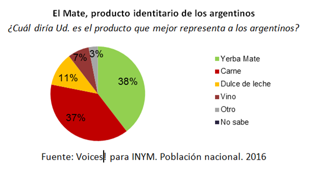

Mate argentino

Al consultar de manera espontánea cuál es el producto que mejor representa a los argentinos “el mate se lleva el primer lugar como rasgo identitario de la argentinidad” con un 38%, seguido de la carne con un 37%, y luego el dulce de leche y el vino con un 11 % y un 7% respectivamente.
